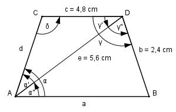

Aufgabe 166 Wie groß ist die Seite a des gleichschenkligen Trapezes?

Im Dreieck ADC: d = b = 2,4 cm Fall SSS: Cosinussatz: e2 = c2 + d2 - 2 * c * d * cos δ |+2*c*d*cos δ e2 + 2 * c * d * cos δ = c2 + d2 |-e2 2 * c * d * cos δ = c2 + d2 - e2 |:2 * c * d c2 + d2 - e2 cos δ = ---------------- = 2 * c * d 4,82 cm2 + 2,42 cm2 - 5,62 cm2 = -------------------------------- = 2 * 4,8 cm * 2,4 cm = -0,1111 --> δ = 96,4° Fall SSW: Sinussatz: e c ------- = -------- |*sin α’ sin δ sin α’ e * sin α’ --------------- = c |*sin δ sin δ e * sin α’ = c * sin δ |:e c * sin δ sin α’ = ------------ = e 4,8 cm * sin 96,4° 4,8 cm * 0,9938 = --------------------- = ------------------ = 5,6 cm 5,6 cm = 0,8518 --> α’ = 58,4° γ’ = 180° - δ – α’ = 180° - 96,4° - 58,4° = 25,2° γ = δ = 96,4° γ’’ = γ – γ’ = 96,4° - 25,2° = 71,2° α = 180° - δ = 180° - 96,4° = 83,6° (Stufenwinkel) α’’ = α – α’ = 83,6° - 58,4° = 25,2° Im Dreieck ABD: Fall SWW: Sinussatz: b a ------- = -------- |* sin γ’’ sin α’’ sin γ’’ b * sin γ’’ a = ------------- = sin α’’ 2,4 cm * sin 71,2° 2,4 cm * 0,9466 = --------------------- = ------------------- = sin 25,2° 0,4258 = 5,3 cm